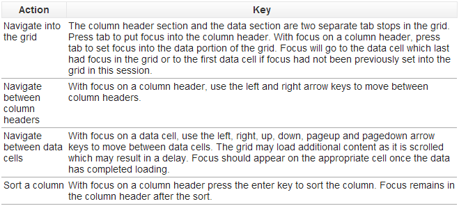

THE DATAGRID: DataGrid Overview
The DataGrid is a visual grid/table, much like a spreadsheet, that displays the attributes of properties queried for in the Search for Properties content panel.

 HELPFUL TIP: When you highlight a row in the DataGrid by clicking once on it, the corresponding property on the map will also be highlighted. If you double-click a row, the corresponding property on the map will be zoomed to. (NOTE: The PrintTask will not work if a DataGrid row has been highlighted. Unknown issue hopefully resolved in the future).
HELPFUL TIP: When you highlight a row in the DataGrid by clicking once on it, the corresponding property on the map will also be highlighted. If you double-click a row, the corresponding property on the map will be zoomed to. (NOTE: The PrintTask will not work if a DataGrid row has been highlighted. Unknown issue hopefully resolved in the future).
MORE HELPFUL TIPS:

Created with the Personal Edition of HelpNDoc: Easy CHM and documentation editor